The day after I got back from Jackson Hole, my spring break having been cut short, I was invited to a zoom meeting by one of my professors. He had gotten a group of us together to start tackling pandemic-related issues with our engineering expertise. Also in that meeting was my friend Brian Beitler, a 2nd-year med student at the time. For the first two days, we focused on making DIY personal protective equipment, such as face shields and masks. At one of our meetings, Brian mentioned that we should really start thinking about ventilators, as Yale-New Haven Hospital was beginning to worry that they would run out; back then, the ventilator crisis appeared to be a very real threat. In particular, Brian thought that the best way to address the crisis was to use a single ventilator to ventilate multiple patients.
There were a number of engineering groups around the world already tackling this issue, but almost all of them were focused on designing and building new ventilators. It seemed that the consensus among DIY engineers on the internet was that, because a ventilator is essentially an air pump, one could recreate its functionality by affixing an actuator to a balloon. We thought this approach to be slightly misguided — Philips can charge $30K for a ventilator and hospitals are happy to pay it because their manufacturing process has been painstakingly reviewed and approved by the FDA. Each moving part in a ventilator (and there are many) introduces a new failure mode and requires an additional level of inspection. Ventilators themselves aren't particularly complicated, but the process to make one is. It was apparent to Brian and I that no DIY ventilator, no matter how faithfully it matched the performance of a Philips one, would ever be used in a hospital. Not just for liability, but also because "safety" is a very real concept in the engineering world, and any ventilator produced using an unaccredited manufacturing process would certainly not be "safe."
So I thought about it for two seconds and immediately agreed with Brian: it made much more sense to expand the capabilities of existing ventilators rather than try to make new ventilators. What ultimately enabled us to receive FDA EUA approval within a month of beginning work was that our device, the Vent Multiplexer, could be manufactured as a single piece using a biocompatible, easily-sterilizable process. After I hopped off zoom the night Brian made his comment about ventilators, I called him up and asked for more details. Then I started playing around with the math and working on the initial design for what ended up becoming the vent multiplexer.
Vent Multiplexer LLC
There are several accounts out there of how everything went down with this project, but I'm here to set the record straight. Just kidding, the story isn't that dramatic. Before I begin, there's one thing I'd like to get out of the way: there are two ways to spell multiplexer — that way, and "multiplexor." The media seems to love the latter method but I think the "er" version looks better. Either way, we're talking about the same thing. Linked below are some third party accounts of the vent multiplexer story. I've included PDF links of each article in case the links are paywalled.- Yale Daily News (PDF)
- NCBI Paper (PDF)
- BioSpace (PDF)
Beginnings
The issue with ventilator splitting & some interesting physics
To understand why ventilator splitting is complex, we first have to understand what a ventilator does. Ventilators have a lot of settings that can be adjusted, but the two main ones are PEEP (positive end-expiratory pressure) and tidal volume. PEEP refers to the pressure in a patient's lungs at the end of expiration. Tidal volume is the total volume of air that enters a patient's lungs over the course of their taking a breath. Doctors choose the PEEP and tidal volume for each patient depending on their ailment and the properties of their lungs. For example, in the clinical trial we ran at Yale-New Haven Hospital (which is reported in the NCBI paper linked above), patient A required a PEEP of 14 cm H2O and a tidal volume of 350 mL, whereas patient B required a PEEP of 10 cm H2O and a tidal volume of 450 mL (meaning they were probably a larger person than patient A). If these patients were naively attached to a ventilator set at a tidal volume of 800 mL, there would be no guarantee that each would receive the correct tidal volume because the split of the volume depends on the lung compliance of each patient.
We can model lungs as springs in the following way:
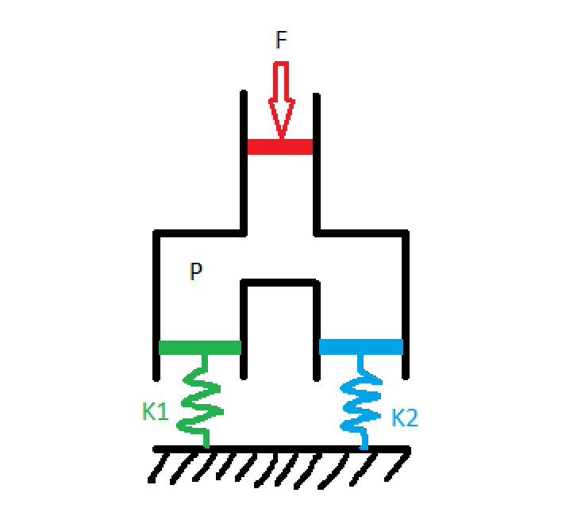
Where patient 1 has lungs with springiness K1 and patient 2 has lungs with springiness K2 (from here out, I'll refer to this quantity as lung compliance because that's what they use in the medical field, but the astute physicist will note that compliance is actually the inverse of springiness, so lung compliance is 1/k). Some agent (the ventilator, in our case) presses down on the red piston with force F, creating a pressure P in the chamber. The green and the blue pistons, corresponding to our two patients' lungs, have area equal to the red piston so each experiences a force F pushing down on them. The distance that each spring displaces, which is proportional to the tidal volume flowing into each chamber, is: $$ x_1 = \frac{F}{k_1} $$ $$ x_2 = \frac{F}{k_2} $$ These equations tell us that, unless you know K1 and K2, you can't guarantee certain tidal volumes by hooking two patients up to the same ventilator with a simple T-splitter. In fact, one of the earliest ventilator splitting experiments to come out of the pandemic worked by matching patients up by lung compliance, which is an inexact science. This method was also limited because it required finding patients who needed the same tidal volume and had similar lung compliance.
The challenge of ventilator splitting, it seems, comes down to designing a mechanism by which we can individually control the tidal volume going to each patient. Well, this is actually quite easy. Valves, like the kind you have in your sink, do just this! By opening and closing an aperture, valves are able to throttle the flow-rate of liquid or gas through a pipe. So let's modify the design to include a valve for each patient: 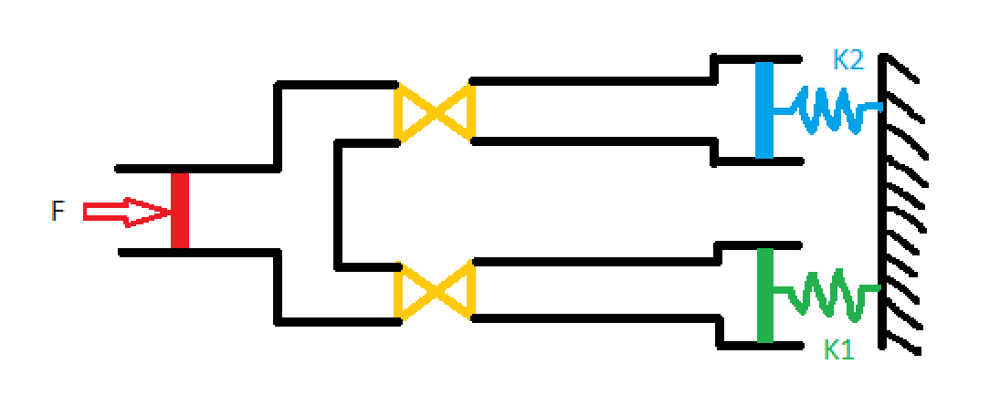
Now that we have a way to control the tidal volume for each patient, the question becomes "to where do we set each valve?" We can't directly look into patients lungs and see how much air is going in, so we're going to need some other method of measuring the tidal volume flowing into each patient. Once we have that, we'll know how to adjust the valves. This is the first point in the whole design process where the path forward isn't simple. Consequently, when I said earlier that I starting putting pencil to paper to play around with various designs, this is the step I was talking about.
Measuring volumetric flow rate through a pipe is nothing new, but doing it cheaply is actually quite difficult. There are many sensors available on the market that you can afix to a pipe and that will digitally report the flow rate, but including electronics of any kind in our system would have extended the FDA EUA approval process by many months, and we needed our device approved within a few weeks. Ultimately, the solution I came up with was inspired by a jet engines class I was taking at the time: venturi tubes. Venturi tubes have been around for a while and work wonderfully to measure the flow rate of compressible gasses. Their design is incredibly simple, consisting only of a pipe with a constriction in it. Here's what the interior of the vent multiplexer looked like:
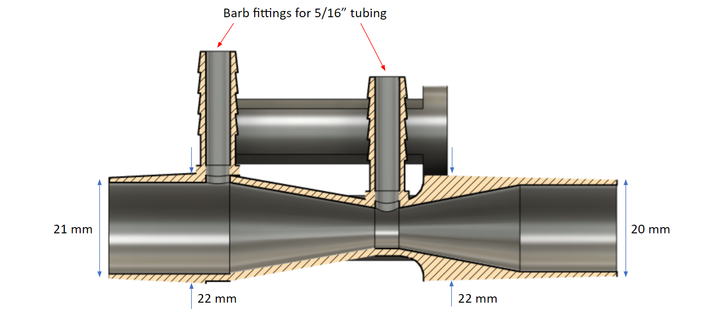
We can see that the interior of the tube is shaped like an hourglass, and has two pressure measurement points (indicated by the red arrows): one at the constriction where the inner diameter is 10 mm, and one at the edge of the hourglass where the inner diameter is 19 mm. The Venturi effect says that when a flow passes through a constriction, the pressure drops and the velocity increases according to: $$ p_1 - p_2 = \frac{\rho}{2}(v_1^2 - v_2^2) $$ where P1 is the pressure at the largest diameter and P2 is the pressure at the smallest. Of course, this equation is only valid for incompressible fluids. However, we know that the density of a compressible fluid changes like $$ \rho_0 / \rho = (1+\frac{\gamma + 1}{2}M^2)^{1/(\gamma - 1)} $$ For sufficiently low mach number M, which is the case of air flowing in and out of a patient during the respiratory cycle, the right hand side of this equation goes to one, indicating that the flow behaves as if it were incompressible.
Knowing that the volumetric flow rate Q is defined as $$ Q = vA $$ where A is the area of the tube, we can rearrange the Venturi effect equation to give: $$ Q = A_1 \sqrt{\frac{2}{\rho}} \left( \frac{p_1 - p_2}{(A_1 / A_2)^2 - 1} \right)^{1/2} $$ where A1 is the cross-sectional area where P1 is measured, and A2 is the cross-sectional area where P2 is measured.
This equation tells us that in order to maximize the pressure difference for a given flow rate Q, we need to maximize A1/A2. Physically, this is accomplished by placing the first pressure measurment point at the widest part of the Venturi tube, and the second at the smallest part. This is how we chose for the locations for the two measurement points, which can be seen in the above picture.
For now though, let's lump everything not dependant on P1 and P2 into a function f, for clarity. $$ Q = f(A_1, A_2, \rho) \sqrt{p_1 - p_2} $$ It might not seem like it, but this is actually a huge step forward. Since the function f is a constant, we've reduced the measurement of volume (difficult) to the measurement of two pressures (easy). More specifically, our equation for flow rate depends on the difference between two pressures, which is even easier to measure.
By connecting the two pressure measurement points with a tube, filled with a small amount of water, we can deduce the pressure difference by observing the height of the water inside the tube. 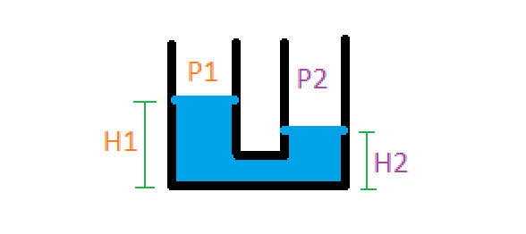
The pressure difference is: $$ p_1 - p_2 = \rho g (h_1 - h_2) $$ where rho in this case is the density of water. Our final formula, in this case, for calculating the flow rate from a physically measurable quantity (the height of the water) is: $$ Q = f(A_1, A_2, \rho_{air}) \sqrt{\rho_{water} g (h_1 - h_2)} $$ For clarity, let's absorb all the constants into one variable: $$ k = f(A_1, A_2, \rho_{air}) \sqrt{\rho_{water} g} $$ $$ Q = k \sqrt{\Delta h} $$ This equation is in its final form! It says that the volumetric flow rate Q through the Venturi tube is proportional to the square root of the height difference in a water column. If you're confused about what I mean by "water column" or "height difference," keep reading. In the next section, I'll go over what our design looked like and how the height difference was actually measured.
We can model lungs as springs in the following way:
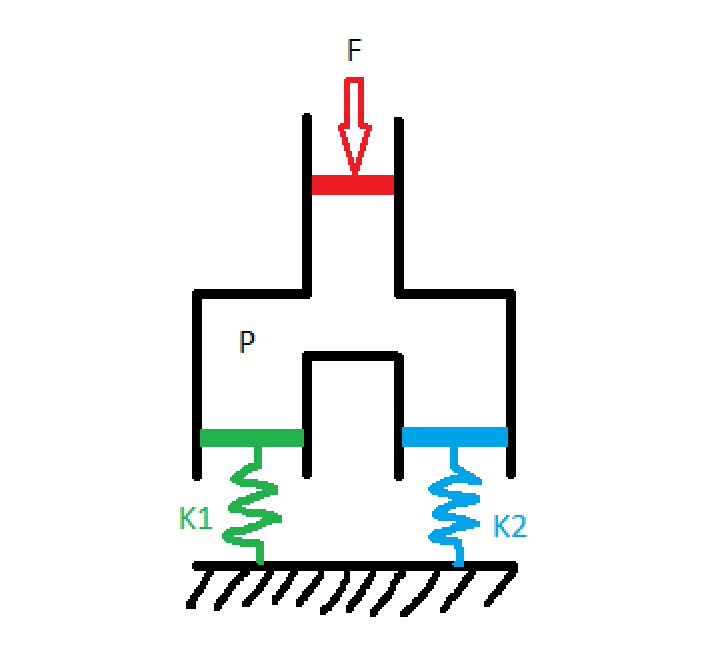
Where patient 1 has lungs with springiness K1 and patient 2 has lungs with springiness K2 (from here out, I'll refer to this quantity as lung compliance because that's what they use in the medical field, but the astute physicist will note that compliance is actually the inverse of springiness, so lung compliance is 1/k). Some agent (the ventilator, in our case) presses down on the red piston with force F, creating a pressure P in the chamber. The green and the blue pistons, corresponding to our two patients' lungs, have area equal to the red piston so each experiences a force F pushing down on them. The distance that each spring displaces, which is proportional to the tidal volume flowing into each chamber, is: $$ x_1 = \frac{F}{k_1} $$ $$ x_2 = \frac{F}{k_2} $$ These equations tell us that, unless you know K1 and K2, you can't guarantee certain tidal volumes by hooking two patients up to the same ventilator with a simple T-splitter. In fact, one of the earliest ventilator splitting experiments to come out of the pandemic worked by matching patients up by lung compliance, which is an inexact science. This method was also limited because it required finding patients who needed the same tidal volume and had similar lung compliance.
The challenge of ventilator splitting, it seems, comes down to designing a mechanism by which we can individually control the tidal volume going to each patient. Well, this is actually quite easy. Valves, like the kind you have in your sink, do just this! By opening and closing an aperture, valves are able to throttle the flow-rate of liquid or gas through a pipe. So let's modify the design to include a valve for each patient: 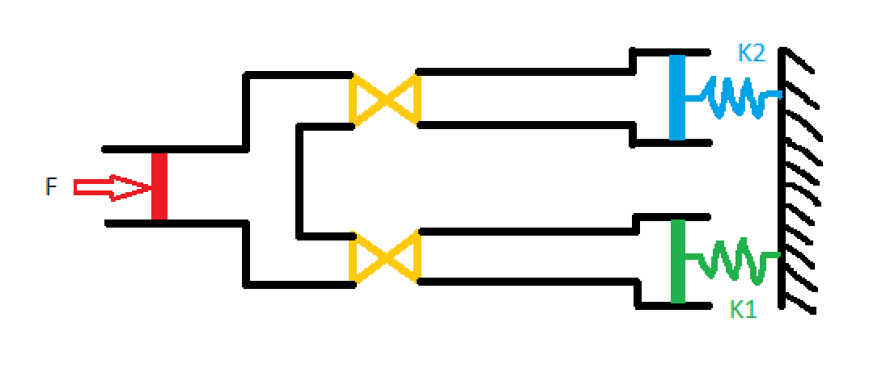
Now that we have a way to control the tidal volume for each patient, the question becomes "to where do we set each valve?" We can't directly look into patients lungs and see how much air is going in, so we're going to need some other method of measuring the tidal volume flowing into each patient. Once we have that, we'll know how to adjust the valves. This is the first point in the whole design process where the path forward isn't simple. Consequently, when I said earlier that I starting putting pencil to paper to play around with various designs, this is the step I was talking about.
Measuring volumetric flow rate through a pipe is nothing new, but doing it cheaply is actually quite difficult. There are many sensors available on the market that you can afix to a pipe and that will digitally report the flow rate, but including electronics of any kind in our system would have extended the FDA EUA approval process by many months, and we needed our device approved within a few weeks. Ultimately, the solution I came up with was inspired by a jet engines class I was taking at the time: venturi tubes. Venturi tubes have been around for a while and work wonderfully to measure the flow rate of compressible gasses. Their design is incredibly simple, consisting only of a pipe with a constriction in it. Here's what the interior of the vent multiplexer looked like:
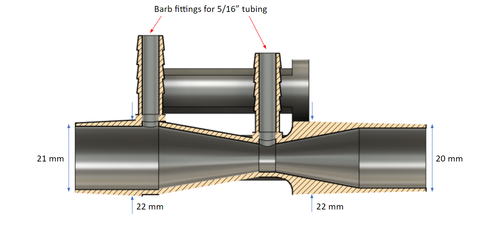
We can see that the interior of the tube is shaped like an hourglass, and has two pressure measurement points (indicated by the red arrows): one at the constriction where the inner diameter is 10 mm, and one at the edge of the hourglass where the inner diameter is 19 mm. The Venturi effect says that when a flow passes through a constriction, the pressure drops and the velocity increases according to: $$ p_1 - p_2 = \frac{\rho}{2}(v_1^2 - v_2^2) $$ where P1 is the pressure at the largest diameter and P2 is the pressure at the smallest. Of course, this equation is only valid for incompressible fluids. However, we know that the density of a compressible fluid changes like $$ \rho_0 / \rho = (1+\frac{\gamma + 1}{2}M^2)^{1/(\gamma - 1)} $$ For sufficiently low mach number M, which is the case of air flowing in and out of a patient during the respiratory cycle, the right hand side of this equation goes to one, indicating that the flow behaves as if it were incompressible.
Knowing that the volumetric flow rate Q is defined as $$ Q = vA $$ where A is the area of the tube, we can rearrange the Venturi effect equation to give: $$ Q = A_1 \sqrt{\frac{2}{\rho}} \left( \frac{p_1 - p_2}{(A_1 / A_2)^2 - 1} \right)^{1/2} $$ where A1 is the cross-sectional area where P1 is measured, and A2 is the cross-sectional area where P2 is measured.
This equation tells us that in order to maximize the pressure difference for a given flow rate Q, we need to maximize A1/A2. Physically, this is accomplished by placing the first pressure measurment point at the widest part of the Venturi tube, and the second at the smallest part. This is how we chose for the locations for the two measurement points, which can be seen in the above picture.
For now though, let's lump everything not dependant on P1 and P2 into a function f, for clarity. $$ Q = f(A_1, A_2, \rho) \sqrt{p_1 - p_2} $$ It might not seem like it, but this is actually a huge step forward. Since the function f is a constant, we've reduced the measurement of volume (difficult) to the measurement of two pressures (easy). More specifically, our equation for flow rate depends on the difference between two pressures, which is even easier to measure.
By connecting the two pressure measurement points with a tube, filled with a small amount of water, we can deduce the pressure difference by observing the height of the water inside the tube. 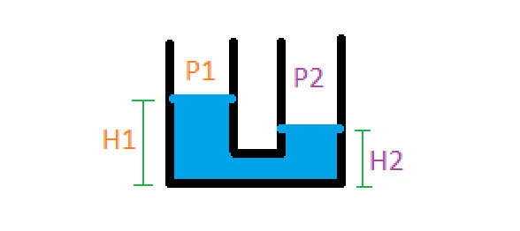
The pressure difference is: $$ p_1 - p_2 = \rho g (h_1 - h_2) $$ where rho in this case is the density of water. Our final formula, in this case, for calculating the flow rate from a physically measurable quantity (the height of the water) is: $$ Q = f(A_1, A_2, \rho_{air}) \sqrt{\rho_{water} g (h_1 - h_2)} $$ For clarity, let's absorb all the constants into one variable: $$ k = f(A_1, A_2, \rho_{air}) \sqrt{\rho_{water} g} $$ $$ Q = k \sqrt{\Delta h} $$ This equation is in its final form! It says that the volumetric flow rate Q through the Venturi tube is proportional to the square root of the height difference in a water column. If you're confused about what I mean by "water column" or "height difference," keep reading. In the next section, I'll go over what our design looked like and how the height difference was actually measured.
The evolution of our design
Once I had settled on using a Venturi tube to measure volumetric flow rate, the next thing to figure out was the dimensions required to appropriately measure the human breathing cycle. If the diameter of the constriction in the tube was too large, then the pressure difference would be small and the height change in the water column small, therefore difficult to measure. If the diameter of the constriction was too small, then the water column would shoot out of the tube. I was fortunate to have in my house a Form 3 SLA printer, which was capable of producing intricate plastic parts such as a Venturi tube. Here's a picture of one of the earlier prototypes (I think the fourth or fifth):
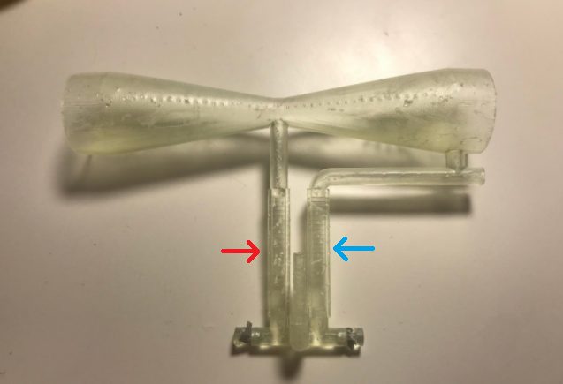
The hourglass shape of the Venturi tube is pretty apparent in the above picture. The red and blue arrows indicate the water chamber, analogous to the diagram of the water columns in the previous picture. We can see that the column marked by the blue arrow is connected to the wide end of the tube, while the red-indicated tube is connected to the constricted point. When a stream of air passed through the tube, the pressure would drop at the constriction, forcing the water in the red column to rise and the water in the blue column to sink. This can be seen in the following video, which I had my mom take when I was playing around with adding electronic sensing to the device and wanted to show the tech to Brian.
After the third prototype, I was satisfied with the parameters of the Venturi tube design so I contacted Brian about testing the device on a real ventilator at Yale-New Haven hospital. We met at a McDonald's parking lot near Hartford, halfway between New Haven and Northampton, where I was living at the time. He then went to the hospital and hooked one end of the device up to a ventilator, and the other end to a balloon to simulate a lung. After running a few tests, we hopped on zoom and he filled me in on the results of the experiments. Based on his feedback, I modified the CAD for the multiplexer in real time, my computer complaining the whole while about managing the loads of both zoom and Fusion 360.
For almost a week straight, Brian and I met each day at the Hartford McDonald's so I could hand off the latest prototype. Once we signed off zoom each night, usually around midnight, I would set up the next prototype on my 3D printer. One night before a demo in front of high-ranking hospital members, I had to get up at 3 AM and then again at 6 AM to move the print around in order to meet the following day's deadline. It was a fun week, don't get me wrong, but exhausting.
Here's some videos showing the utility of using two vent multiplexer devices to coventilate patients. In the first video, as Brian explains, our two patients are getting unequal tidal volumes because their "lungs" have different compliances. We can see this by observing the water in the two patients' vent multiplexers: in the first patient, their water column barely moves at all; in the second, their water column moves a lot.
After observing the results in the first video, Brian adjusts the flow valves for each patient so that they're getting equal tidal volumes. He's able to validate this by seeing that each patients' vent multiplexers' water column moves the same amount.
Once we got to this point, the design of the Venturi tube itself seemed pretty much done. It was indicating flow rate over the range of tidal volumes we expected real patients to require, which is the design challenge we initially set out to solve.
The journey of the "Vent Multiplexer" device was far from over, however. In any engineering project, meeting the technical specifications of the problem is only the first step. After that, you have to start thinking about the bigger picture: how does the form of the device affect how people use it? Will it pass FDA EUA approval? How will it be manufactured? Assembled? What are the logistics of getting this device into the hands of users?
For starters, it seemed natural that, if the utility of the device was in comparing the water columns of two patients, we should locate those water columns as close to one another as possible for easy viewing. Additionally, if you look closely in the videos, you can see that for a given water column the water in one chamber goes up just as much as the water in the other chamber goes down. This means that to get a full reading, you only need to look at one of the chambers. These two facts led us to the following design:
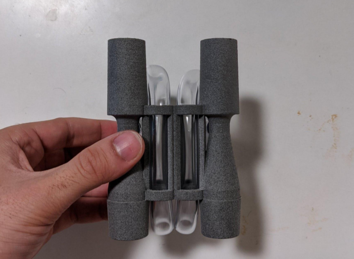
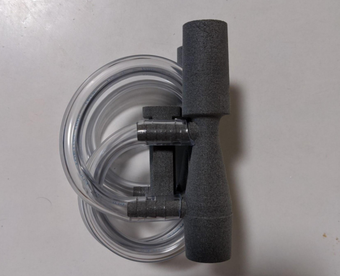
The material used in the final vent multiplexers, seen above, is Nylon PA12 printed using HP MultiJet Fusion. SLA printing was conventient for prototypes, but far too costly for medium scale production runs. Another benefit of this material was that it could withstand autoclave sterilization cycle, which helped us speed through the FDA EUA approval process. As a consequence of switching to PA12, which is opaque, we weren't able to print the water chamber attached to the Venturi tubes, so we modified the device to use 5/16" clear plastic tubing which was thenx routed through the central cylinders for easy viewing. If you're curious about the details of the tube routing, I encourage you to check out this ammendment we submitted to the FDA on the subject.
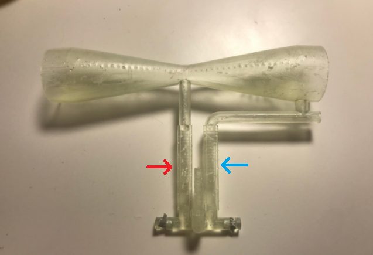
The hourglass shape of the Venturi tube is pretty apparent in the above picture. The red and blue arrows indicate the water chamber, analogous to the diagram of the water columns in the previous picture. We can see that the column marked by the blue arrow is connected to the wide end of the tube, while the red-indicated tube is connected to the constricted point. When a stream of air passed through the tube, the pressure would drop at the constriction, forcing the water in the red column to rise and the water in the blue column to sink. This can be seen in the following video, which I had my mom take when I was playing around with adding electronic sensing to the device and wanted to show the tech to Brian.
After the third prototype, I was satisfied with the parameters of the Venturi tube design so I contacted Brian about testing the device on a real ventilator at Yale-New Haven hospital. We met at a McDonald's parking lot near Hartford, halfway between New Haven and Northampton, where I was living at the time. He then went to the hospital and hooked one end of the device up to a ventilator, and the other end to a balloon to simulate a lung. After running a few tests, we hopped on zoom and he filled me in on the results of the experiments. Based on his feedback, I modified the CAD for the multiplexer in real time, my computer complaining the whole while about managing the loads of both zoom and Fusion 360.
For almost a week straight, Brian and I met each day at the Hartford McDonald's so I could hand off the latest prototype. Once we signed off zoom each night, usually around midnight, I would set up the next prototype on my 3D printer. One night before a demo in front of high-ranking hospital members, I had to get up at 3 AM and then again at 6 AM to move the print around in order to meet the following day's deadline. It was a fun week, don't get me wrong, but exhausting.
Here's some videos showing the utility of using two vent multiplexer devices to coventilate patients. In the first video, as Brian explains, our two patients are getting unequal tidal volumes because their "lungs" have different compliances. We can see this by observing the water in the two patients' vent multiplexers: in the first patient, their water column barely moves at all; in the second, their water column moves a lot.
After observing the results in the first video, Brian adjusts the flow valves for each patient so that they're getting equal tidal volumes. He's able to validate this by seeing that each patients' vent multiplexers' water column moves the same amount.
Once we got to this point, the design of the Venturi tube itself seemed pretty much done. It was indicating flow rate over the range of tidal volumes we expected real patients to require, which is the design challenge we initially set out to solve.
The journey of the "Vent Multiplexer" device was far from over, however. In any engineering project, meeting the technical specifications of the problem is only the first step. After that, you have to start thinking about the bigger picture: how does the form of the device affect how people use it? Will it pass FDA EUA approval? How will it be manufactured? Assembled? What are the logistics of getting this device into the hands of users?
For starters, it seemed natural that, if the utility of the device was in comparing the water columns of two patients, we should locate those water columns as close to one another as possible for easy viewing. Additionally, if you look closely in the videos, you can see that for a given water column the water in one chamber goes up just as much as the water in the other chamber goes down. This means that to get a full reading, you only need to look at one of the chambers. These two facts led us to the following design:
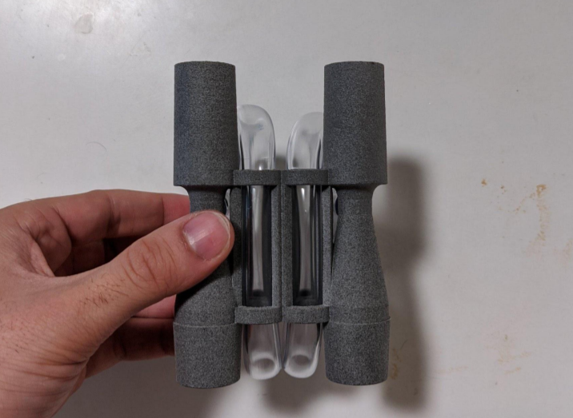
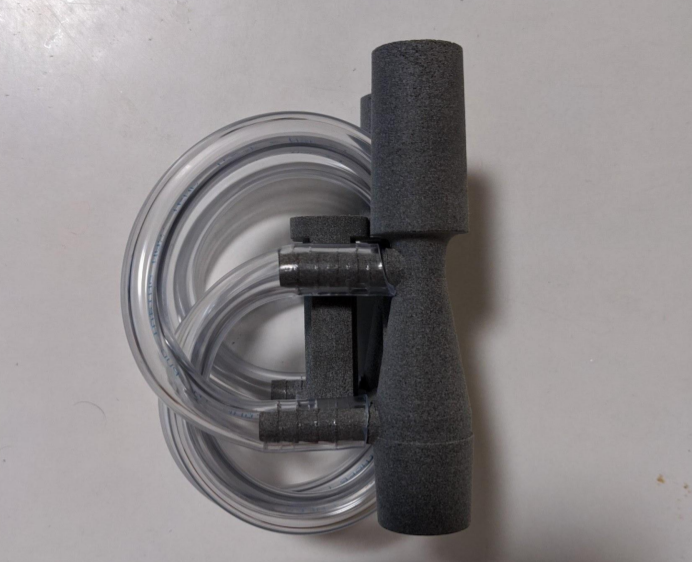
The material used in the final vent multiplexers, seen above, is Nylon PA12 printed using HP MultiJet Fusion. SLA printing was conventient for prototypes, but far too costly for medium scale production runs. Another benefit of this material was that it could withstand autoclave sterilization cycle, which helped us speed through the FDA EUA approval process. As a consequence of switching to PA12, which is opaque, we weren't able to print the water chamber attached to the Venturi tubes, so we modified the device to use 5/16" clear plastic tubing which was thenx routed through the central cylinders for easy viewing. If you're curious about the details of the tube routing, I encourage you to check out this ammendment we submitted to the FDA on the subject.
Other fun links